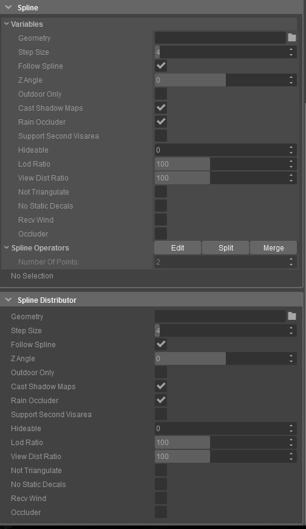

Spline Distributor
You can make precise changes to the geometry by adjusting the spline points and parameters.

Parameters
Parameter | Description |
|---|---|
Geometry | This option specifies the geometry that needs to be used for the object. |
Step Size | Sets the distance between each point along the spline. Smaller values increase the polygon count of the surface but also smooths out corners. |
Follow Spline | When enabled, follows the spline specified in the level. |
Outdoor Only | When set, the object will not be rendered when inside a visarea. |
Rain Occluder | Set the brush to occlude rain, this works in conjunction with Rain Entity. If your level does contain rain, you should set this wisely, as there is a limit of 512 objects that can occlude at any given time. |
Support Second VisArea | Normally, objects are considered to be in only one visarea. This option allows them to be added to multiple visareas if their bounding box overlaps them, at the cost of some performance. Without this option, some large objects may not be displayed when viewed through portals in certain situations. |
Hideable | When this option is set, AI will use this object as a hiding spot, using the specified hide point type. |
Lod Ratio | Defines how far from the current camera position, the different Level Of Detail models for the object are used. |
View Dist Ratio | Sets the distance from the current view at which the object renders. |
Not Triangulate | Deprecated |
No Static Decals | When this option is set, decals will not project onto the object. |
Recv Wind | When this option is set, the object will be affected by the level wind. |
Occluder | Used for the construction of a level occlusion mesh. |